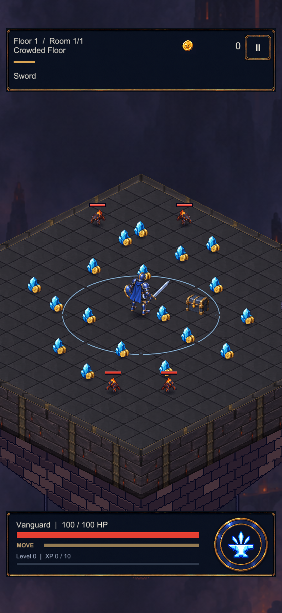

CRYPTFORGE / GERÇEK UNITY GÖRÜNTÜLERİ / 22.09.2026
Yere düşer. Yürüyerek alınır.
XP kristali ve altın artık oyundaki ödül olaylarına bağlı. Yerde dururken zemin sırasını koruyor; toplandığında kısa bir uçuşla kahramana geliyor.

Unity Editor görüntüsü · fiziksel telefon kaydı değildir.
Bu dilimde eklenenler
Ortak sprite, havuzlu görünümler, zemin gölgeleri, aynı noktadaki ödüllerin ayrı takibi, duraklama ve sahne yenileme temizliği.
Yoğunluk örneğindeki konumlar kontrollü test yerleşimleridir. Görüntüdeki “99999” varsa test öldürme hasarıdır. Tek para türü içeren istisnai ödüller basit ve doğru para türünü gösteren geçici simgeler kullanır.
Doğrulama ve uygulama notları · Önceki tarayıcı taslağı · Kaynak üretim promptu